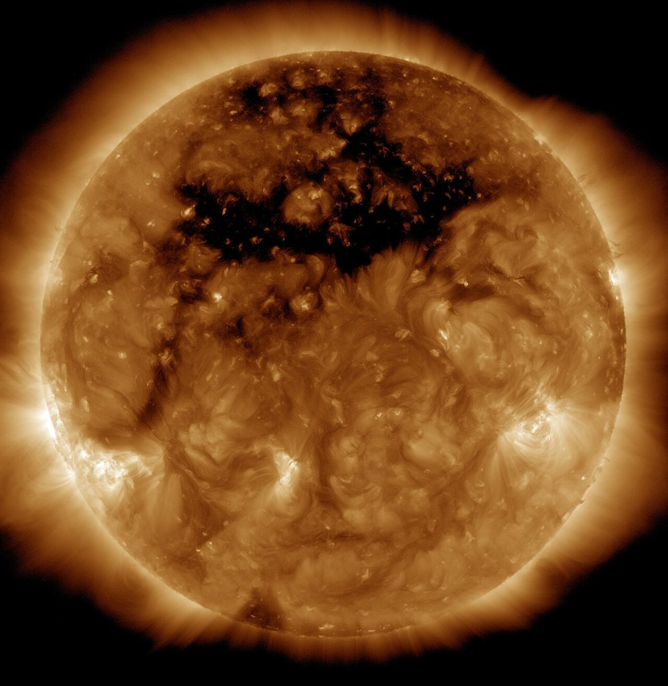

Fluidos conductores, el dínamo terrestre y el viento solar
El hierro líquido del núcleo de la Tierra, el gas del Sol y el plasma entre las estrellas tienen algo en común: son fluidos que conducen electricidad. Un fluido así no solo se mueve: arrastra campos magnéticos, y estos lo empujan a él. La física que une las dos cosas se llama magnetohidrodinámica, y explica desde las ondas del Sol hasta la brújula.
Cuando un fluido conductor se mueve en un campo magnético, aparecen corrientes, y esas corrientes modifican el campo. La ecuación que describe la evolución del campo B tiene dos términos: uno arrastra el campo con el fluido, y otro lo hace difundirse a través del material [1]:
La competencia entre ambos términos se mide con el número de Reynolds magnético, parecido al número de Reynolds, y la aproximación es buena cuando es grande [1]. En ese límite, sin difusión, la ecuación toma la misma forma que la de la vorticidad en un fluido ideal, y por eso se llega a la misma conclusión: el campo magnético queda congelado en el fluido [1].
Hilos en una masa: imaginá hilos de colores metidos en una masa de pan. Si estirás la masa, los hilos se estiran con ella. Las líneas de campo en un plasma conductor hacen algo parecido, con una diferencia: los hilos también tiran de la masa.
Ese tirón es el origen de una onda nueva. Las líneas de campo se comportan como cuerdas en tensión: si se las sacude, el fluido oscila con ellas. En 1942, Hannes Alfvén publicó en Nature una nota breve que mostraba que las ecuaciones de la magnetohidrodinámica implican esa onda [2][3]. Su velocidad es [1]:
Al principio, la idea no entusiasmó. Según relata A. J. B. Russell, Alfvén contaba que el momento clave fue una charla de 1948 en Chicago: Enrico Fermi, entre el público, le pidió que le explicara las ondas y dijo «por supuesto que podrían existir», y con esa autoridad, al día siguiente todos lo aceptaron [3]. La detección de ondas de Alfvén en el viento solar llegó en la era espacial, y Alfvén recibió el Nobel en 1970 [3].
El viento solar sale continuamente del Sol. Es principalmente un plasma de protones y electrones, y lleva consigo el campo magnético solar [4]: un ejemplo directo de campo congelado. Viaja a unos 400 km/s en el plano donde orbitan los planetas, y a entre 500 y 800 km/s si viene de los agujeros coronales [4]. Con un campo de 5 nanoteslas y 5 protones por centímetro cúbico, valores de ejemplo, la velocidad de Alfvén da unos 50 km/s (un cálculo propio): mucho menos que la del viento.

El campo de la Tierra no es el de un imán permanente. El núcleo externo es líquido, y el centro de la Tierra está a unos 6000 K [5]. El campo lo generan corrientes eléctricas producidas como en una dínamo autoexcitada: un conductor que se mueve en un campo magnético [5]. Este geodínamo está impulsado por la convección térmica del hierro líquido [5]. La misma física está detrás de los campos del Sol, las estrellas de neutrones y los campos cósmicos [5].
Lo que todavía se resiste: las ondas de Alfvén son candidatas para explicar por qué la corona solar, a millones de grados, es mucho más caliente que la superficie del Sol [3]. Pero cuánto aportan al calentamiento de la corona y a la aceleración del viento solar sigue siendo tema de investigación [3].
En un fluido conductor, el campo magnético y el movimiento no se pueden separar. Si la conductividad es alta, el campo queda congelado en el fluido y se propaga una onda propia, la de Alfvén. Con esas dos ideas se entienden el viento solar, el dínamo de la Tierra y buena parte del universo, que está lleno de plasma.
Pregunta para la comunidad: Si el campo magnético queda congelado en el plasma, ¿qué le pasa al campo de una estrella que colapsa y reduce su tamaño? Pensá en un resorte comprimido y en los magnetares.